Hours
- Friday, Oct 23
- 5:30 – 10 PM
- Saturday, Oct 24
- 10 AM – 10 PM
- Sunday, Oct 25
- 9 AM – 6 PM
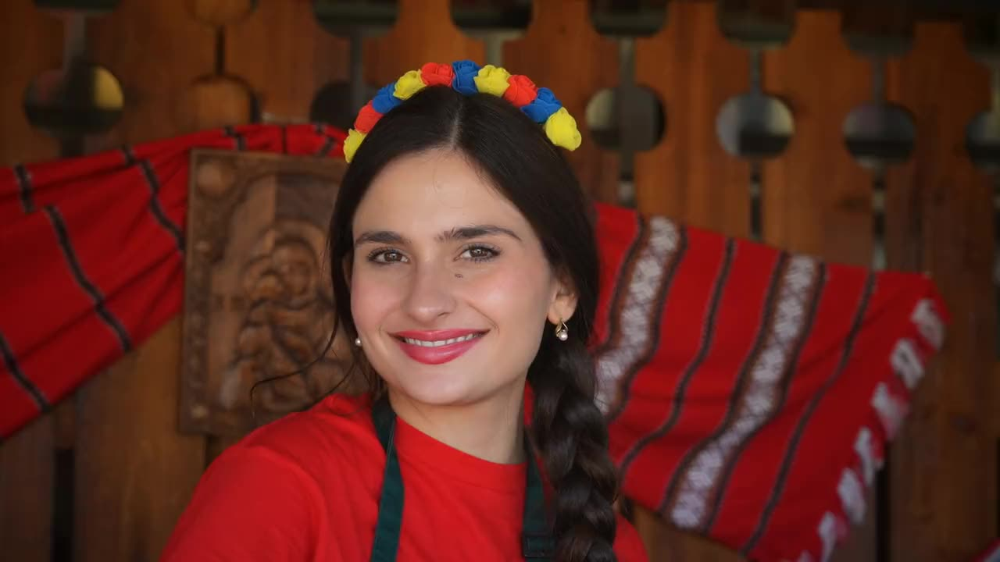
20th edition · October 23–25, 2026
Bine ați venit! Welcome to the Romanian Food Festival at Saint Mary's Romanian Orthodox Church in Colleyville.
A note of gratitude
What could be more wonderful than sharing the joy of Romania—its culture, its traditions and its food—right here in Colleyville, Texas?
Enjoy the unique flavors of cabbage rolls, savory Romanian sausages and homemade pastries, along with traditional costumes and folk dances from our homeland. This is where Romanian food, traditions and culture come together.
Romanians are known for their hospitality and their open arms. With great love, we invite you to discover the rich culture of Romania at the 20th edition of the Romanian Food Festival.
Thank you to our volunteers, who give their time to make the festival a great success. Your contributions have made every edition of the Romanian Food Festival possible.
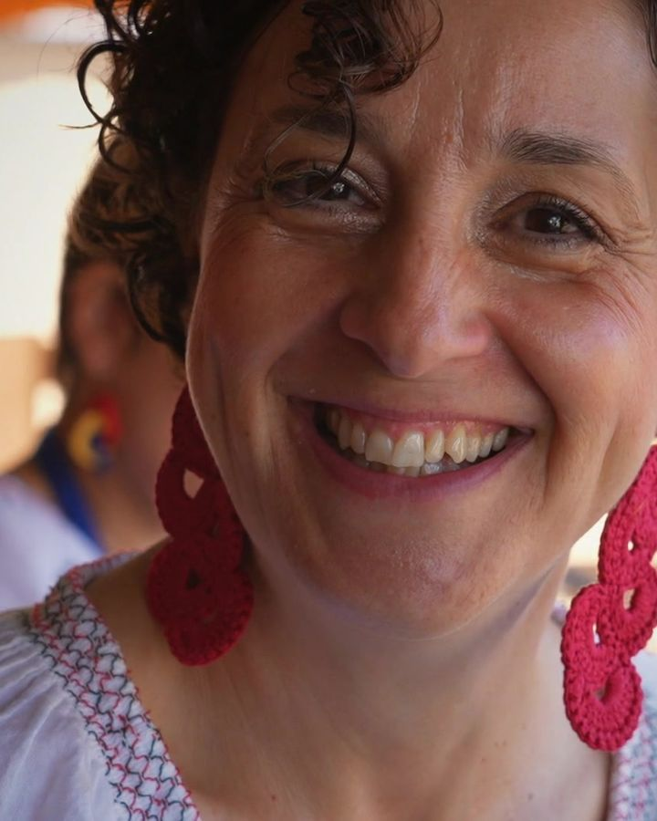
Plan your visit
$10
Children 12 and under enter free.
Buy tickets onlineFree parking, with shuttle service to the festival grounds.
Saint Mary's Romanian Orthodox Church
3801 Glade Road
Colleyville, TX 76034
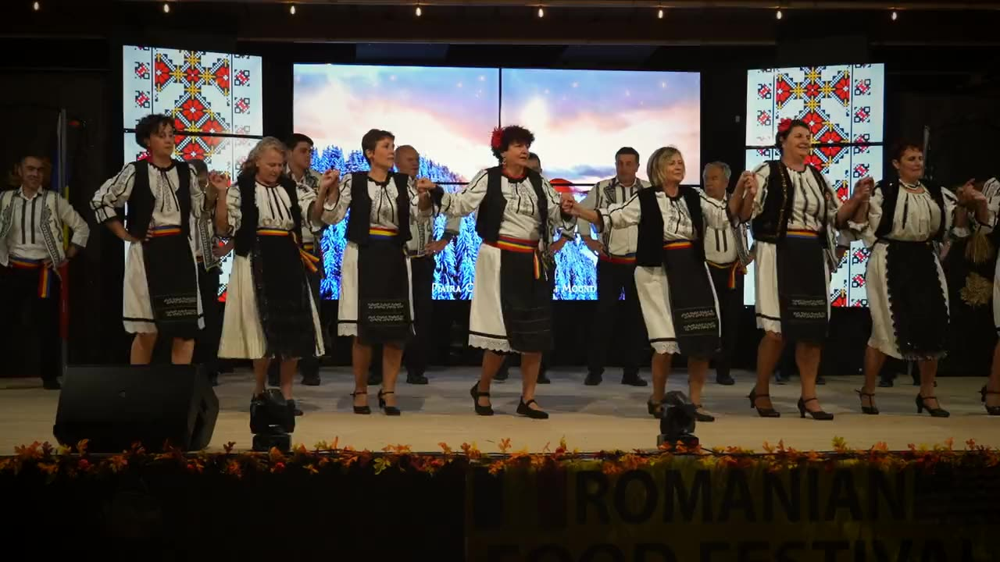
Program · October 23–25
Three days of food, faith, music and dance.
Festival Grand Opening
Live entertainment, grilled selections & bar service
Live Instrumental Performance by Universo Band
Romanian Folk Dance by Tricolorii Veseli Juniori
Live Musical Performance by Universo Band
Romanian Folk Dance by Tricolorii Veseli
Live Musical Performance by Universo Band
Festival Closing
Festival Re-opens
Live Traditional Folk Music featuring Fetele din Botoșani
Official Welcome & Opening Announcements
Live Musical Performance by Reyna Vox
Romanian Folk Dance by Alunelul
Our youngest performers
Romanian Folk Dance by Tricolorii Veseli Juniori
The audience is invited to join a traditional hora at the end
Community Announcements
Live Musical Performance by Universo Band
Church Guided Tour
Romanian Folk Dance by Tricolorii Veseli
The audience is invited to join a traditional hora at the end
Artistic Gymnastics Performance
Live Traditional Folk Performance by Alina Ceuca
Romanian Folk Dance by Alunelul
Our youngest performers
Artistic Gymnastics Performance
Live Musical Performance by Universo Band
Evening Vespers
In the church
Romanian Folk Dance by Tricolorii Veseli Juniori
Romanian Folk Dance by Tricolorii Veseli
The audience is invited to join a traditional hora at the end
Special Presentation: Celebrating 20 Years of the Romanian Food Festival
Grand Evening Concert
Featuring Fetele din Botoșani (Iustina Irimia, Lorena Dupu, Simona Mazăre), alongside Alina Ceuca and Reyna Vox
Festival Closing
Orthodox Divine Liturgy
All are warmly invited to experience the beauty and tradition of the Orthodox Christian service
Festival Re-opens
Live Musical Performance
Featuring Fetele din Botoșani (Iustina Irimia, Lorena Dupu, Simona Mazăre), Reyna Vox and Alina Ceuca
Artistic Gymnastics Performance
Romanian Folk Dance by Alunelul
Our youngest performers
Romanian Folk Dance by Tricolorii Veseli Juniori
Live Musical Performance by Universo Band
Romanian Folk Dance by Tricolorii Veseli
The audience is invited to join a traditional hora at the end
Festival Grand Finale Concert
With featured guest artists and band
Festival Closing
The festival schedule and performance lineup are subject to change without prior notice.
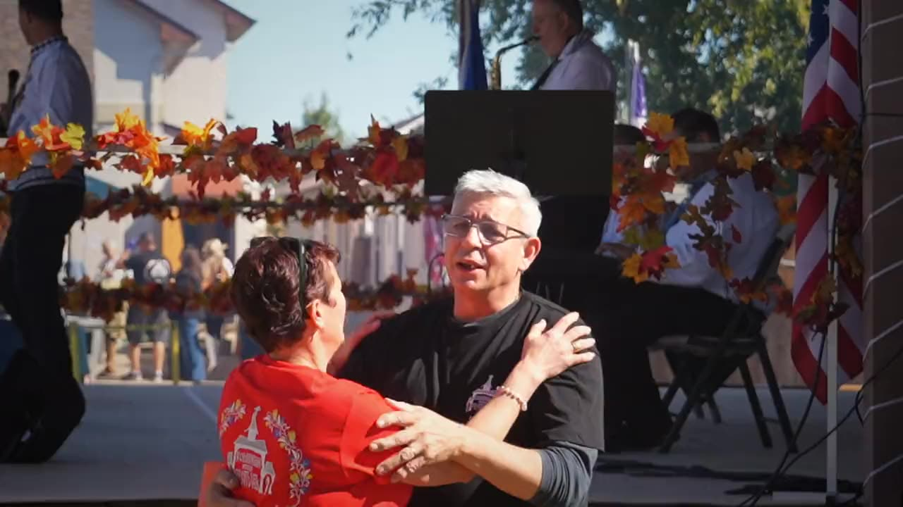
The festival experience
Food, music, dance, faith and family fun, all in one place.
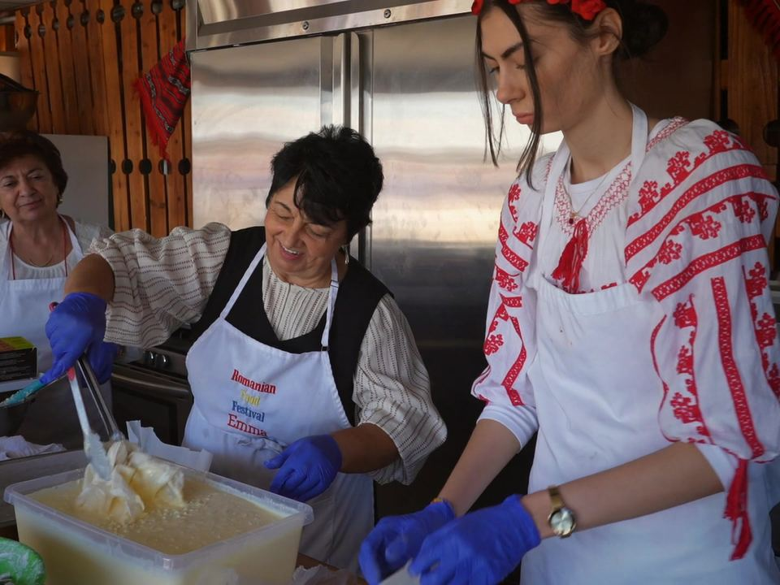
Savor the flavors of Romania: ciorbă, sarmale, mititei, mămăligă and more of our traditional specialties. We wish you poftă bună—enjoy your meal!

From singers to bands, the live sets bring the crowd to its feet—traditional folk, classical and popular Romanian music. Join in on the dancing and singing!
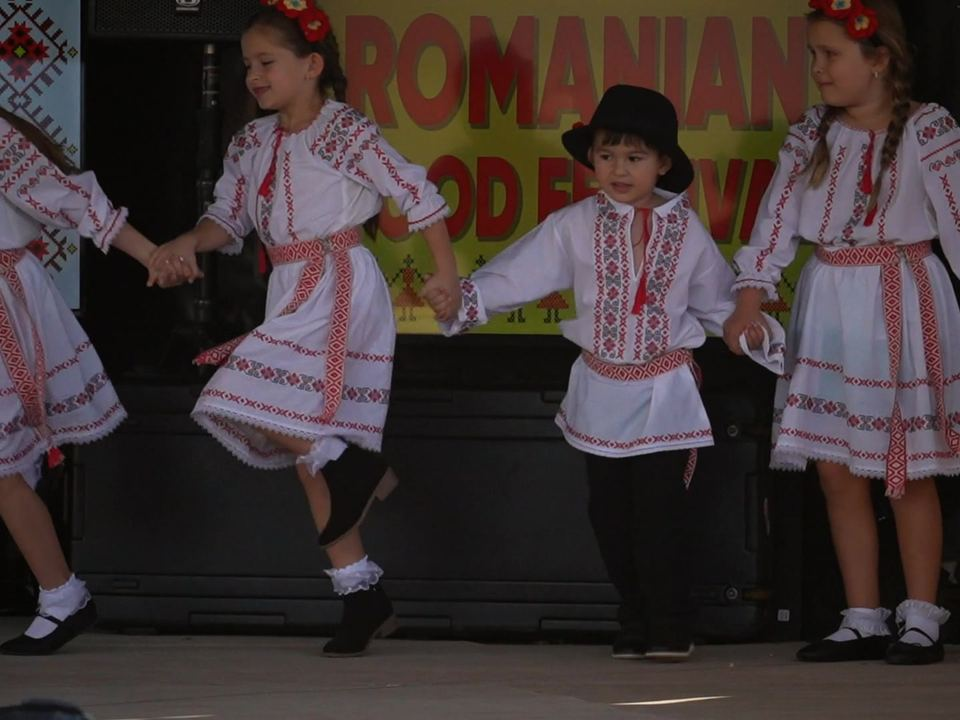
Alunelul and Tricolorii Veseli Juniori—our dance teams of children and young people—perform traditional dances from different regions of Romania.

Several performances by Tricolorii Veseli end with an invitation for the whole audience to join a traditional horă. Everyone is welcome in the circle.

Every year, the gymnasts of Empire Gymnastics grace the festival stage with routines set to authentic Romanian music and well-known pop hits.
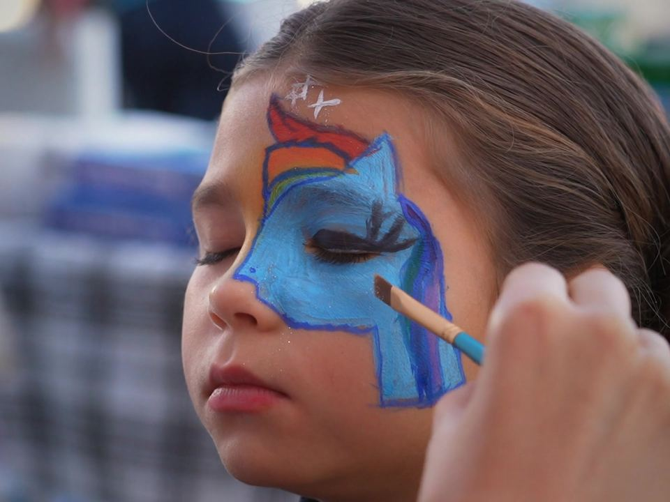
A fun, energetic place for children to play, with face painting, crafts, popcorn, cotton candy and more.
Join in
The hora is the traditional Romanian circle dance. Several performances end with an invitation for the whole audience to join.
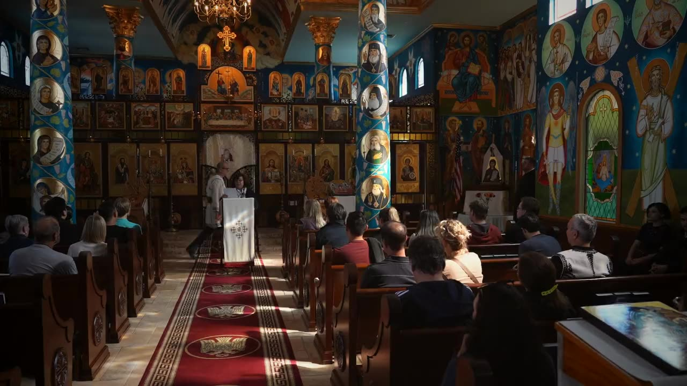
Saint Mary's Romanian Orthodox Church
The first Romanian community in Texas, founded in 1981.
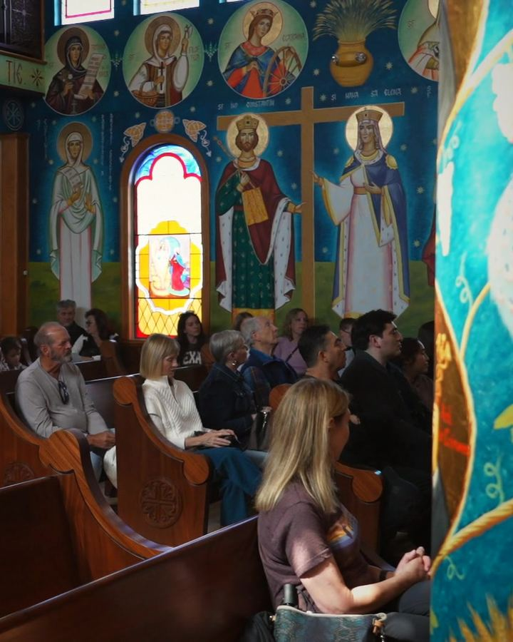
Welcome
The family of Saint Mary's Romanian Orthodox Church—our parishioners and Fr. Ionut Radu, Ph.D.—offers you a sincere welcome to the first Romanian community in Texas, founded in 1981.
Our church is part of the Romanian Orthodox Episcopate of America (ROEA), an archdiocese of more than 130 Romanian communities across the United States and Canada, led by His Eminence Archbishop Nathaniel Popp.
The Romanian people share an ancient and beautiful culture, expressed through our Orthodox faith—brought to our native lands by the Holy Apostle Andrew, the First-Called, in the earliest days of Christianity—and through our foods, dances, costumes, traditions and the vibrant spirit of our people. Today, we invite you to take a glimpse into “our world.”
Many of our faithful parishioners put a great deal of work into this festival, now in its 20th edition, and we hope to continue the tradition for many years to come. We thank them for their dedication—and we thank you for being with us!
Enjoy the day, and return to be with us throughout the year as our guests or as new members. God bless you.
Fr. Ionut Radu, Ph.D., and the Parish Council
During the festival
Saturday · 2:00 PM
Step inside and discover the icons, the iconostasis and the story of our parish.
Saturday · 6:00 PM
The evening prayer service of the Orthodox Church.
Sunday · 9:00 AM
All are warmly invited to experience the beauty and tradition of the Orthodox Christian service.
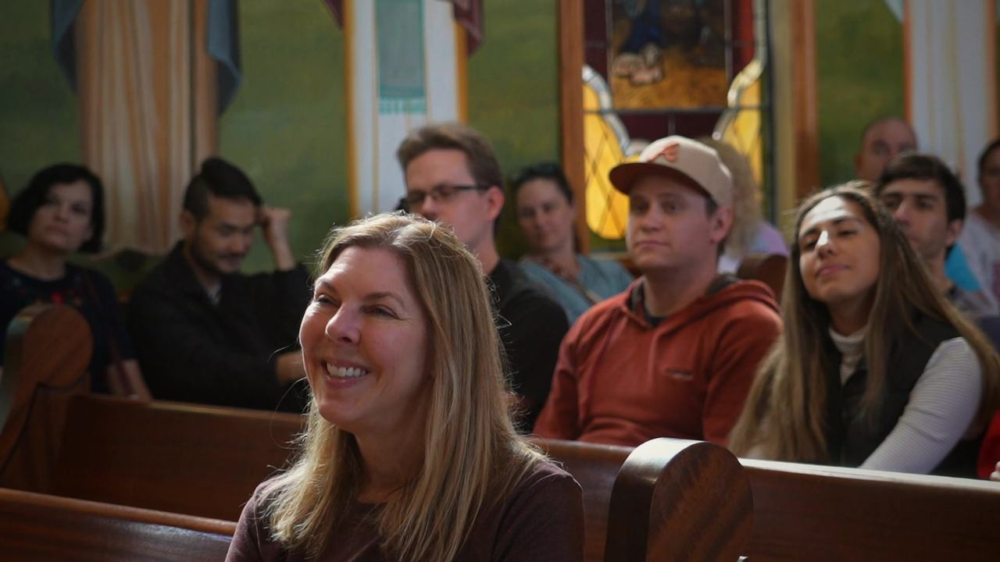
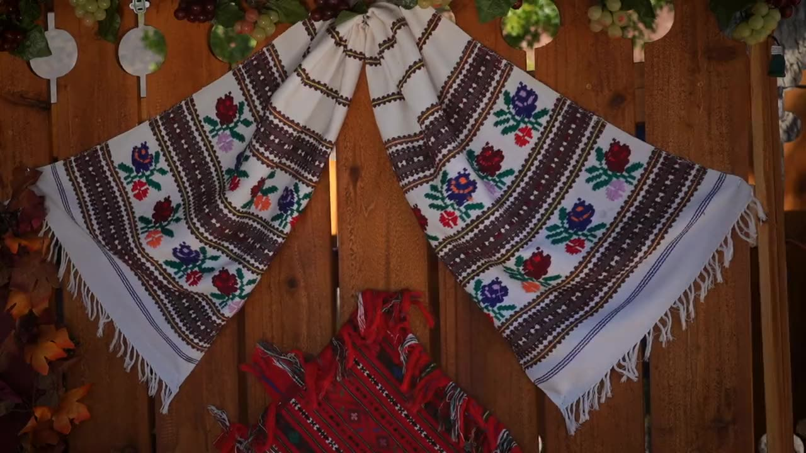
About Romania
The Carpathian Mountains, the Black Sea, the Danube Delta, rivers, lakes and caves—all make Romania a breathtaking place.
Culture and spiritual Romania
The Church has always been the center of Romanian life, and Romanian culture as a whole has grown up around it. The countryside is the heart and soul of Romania, where rural culture remains a strong force and traditional life endures as it does nowhere else in Europe.
“Romania is called the Garden of the Mother of God.”
Pope John Paul II
“Eternity was born in the village.”
Lucian Blaga
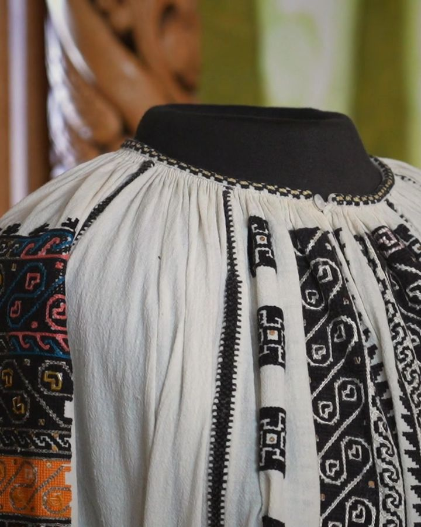
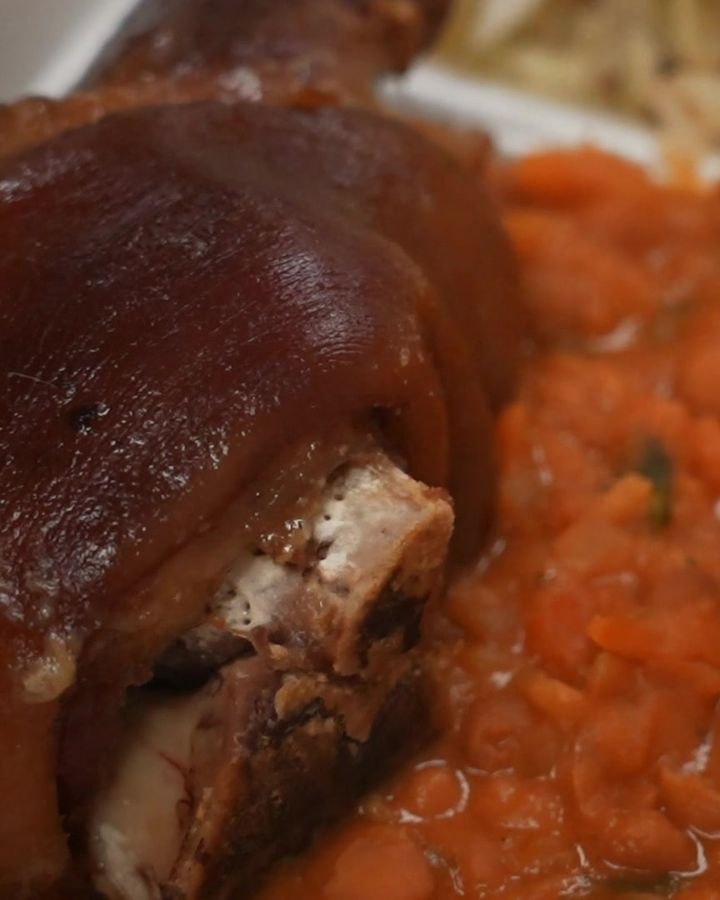
Simply delicious
Throughout its history, Romania stood at the crossroads between East and West—and in the path of many conquerors. Those mixed cultural influences shaped its traditional food, too. You could say Romanian recipes were selected as the best of all cultures—or at least, that is what Romanians like to believe.
Places to discover
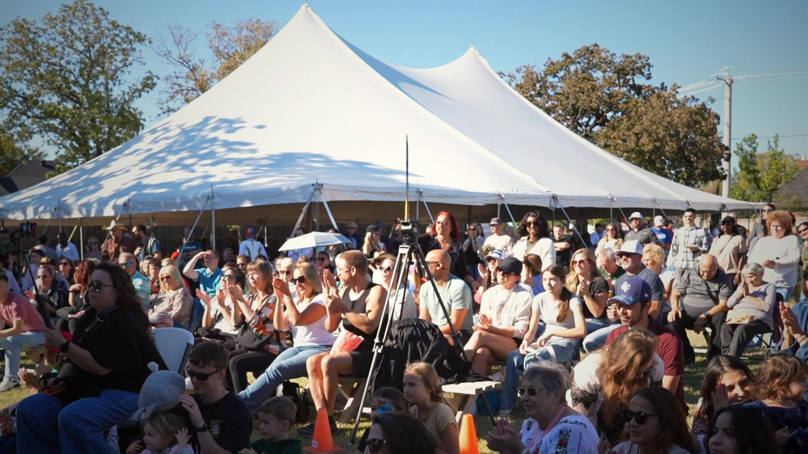
With gratitude
Thank you for making the 20th Romanian Food Festival possible.

AwesomeMath offers great experiences for middle and high school students who love math or physics. From summer programs and a year-round academy to an online journal and publications, it fosters a community where creativity and a passion for problem solving come first.

A member-owned credit union headquartered in Dallas, serving North Texas communities since 1931.

Strategic Marketing Partner
The official Strategic Marketing Partner of the Romanian Food Festival. Publicist Pro's expertise in event promotion and community outreach helps share the festival—and the rich flavors of Romanian culture—with a wider audience.
Partner with us
Support a twenty-year community tradition and put your business in front of thousands of guests.
Continue exploring